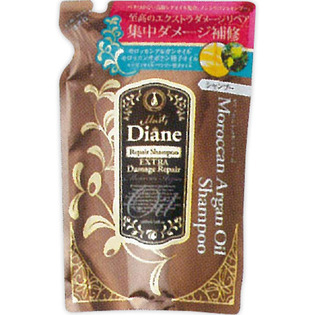

返回列表
产品名称：モイスト・ダイアン オイルシャンプー エクストラダメージリペア 詰替え

ストーリア モイスト・ダイアン オイルシャンプー エクストラダメージリペア 詰替え ４００ｍｌ
メーカー ストーリア
JANコード 4560119223739
商品の特徴
至高のエクストラダメージリペア
集中ダメージ補修
- 成分・分量
- 水、ラウレス硫酸Na、ラウリルベタイン、コカミドDEA、DPG、ココイルグルタミン酸TEA、リンゴ果実培養細胞エキス、アルガニアスピノサ芽細胞エキス、マンゴー種子油、テオブロマグランジフロルム種子脂、カラパグアイアネンシス種子油、バオバブ種子油、アルガニアスピノサ核油、トコフェロール、ケラチン(羊毛)、セテアラミドエチルジエトニウム加水分解コメタンパク、加水分解コンキオリン、コラーゲン、アルギニン、アスパラギン酸、グリシン、アラニン、セリン、バリン、イソロイシン、トレオニン、プロリン、ヒスチジン、フェニル
- 用法及び用量
- 適量